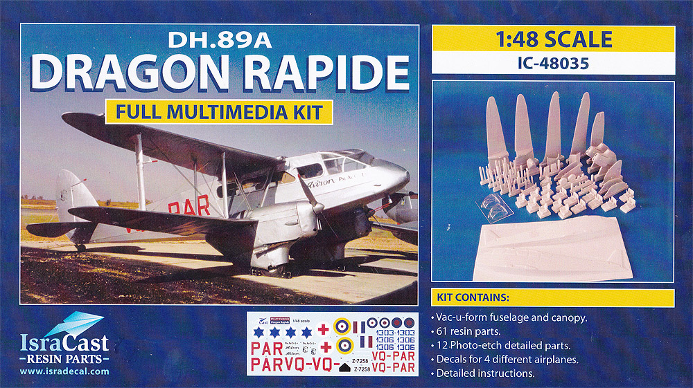
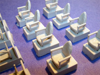
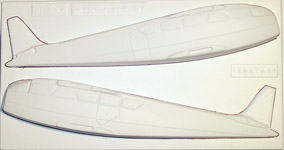
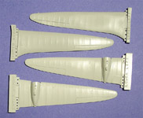
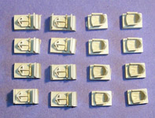
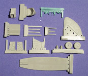
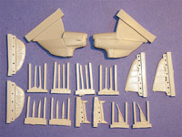
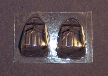
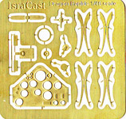
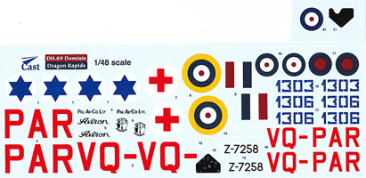

|

Isradecal 1/48 de Havilland DH.89A Dragon Rapide

Kit #48035 MSRP $96.00 $90.00 from Roll Models
Images and text Copyright © 2012 by Matt Swan
Developmental Background
In 1933 the de Havilland Company designed the DH.89 Dragon Six as a replacement for its current short haul small passenger plane the DH.84 and styled it after their larger four engine DH.86 Express. In 1934 the first prototype flew at Hatfield and the type immediately moved into production as the Dragon Rapide with Hillman Airways being the first operator of the type. Before the start of the Second World War about 205 examples had already rolled off the assembly line and were in operational service throughout the United Kingdom. In 1937 some modifications to the wing and flight surfaces were made and this production model became known as the DH.89A and continued as the production standard for the remainder of the series run. By this time the type featured small under-wing trailing flaps, a nose landing light and a heated cabin - true passenger luxury for the day.
With the outbreak of hostilities in 1939 the Rapide was impressed by the British Military as the de Havilland Dominie and utilized as fast passenger carriers (six to eight passenger capable), navigational trainers and communications aircraft. During the war years another 500 examples were manufactured with improved Gipsy Queen six cylinder engines rated at 200 hp each and since they were fabricated mostly from plywood it reduced the strain on critical war materials and primarily used by the 27th Transport Group . After the war some aircraft continued in military service with the Royal Navy as communications aircraft with the remainder returning to civilian service. A few remained on Admirality charge as late as 1961.
The Dragon Rapide was a very durable and economical aircraft that continued in regular service through 1958 with many examples continuing to fly into the 21st century. The type had remained in production for ten years and 728 examples had rolled off the assembly lines of de Havilland and Brush Coachworks Ltd. It was most likely the best short haul British commercial passenger aircraft of the 1930's. It featured a very squarish fuselage section with fixed, trousered fixed undercarriage and tapered biplane wings. A few Rapides destined for Canadian service were fitted with Edo floats and a long dorsal fin while others were fitted with skies for service in northern Canada. Today many of these aircraft are still operating with a few examples already interned in aviation museums.
The Kit
From Isradecal we have a fully detailed, multi-media kit of the DH.89A eight passenger short haul commercial transport. Often when we hear the term 'multi-media' we thing injection molded with resin or photo etched details but in this case we are talking more like a nearly full resin kit with a vacuformed fuselage and some photo etched details. The kit arrives tightly packaged in a medium duty, medium size top flap cardboard box with well-done cover art. Inside we have several zip-lock plastic bags containing groups of resin pieces, decal sheets or the PE fret. Loose in the box is a single sheet of vacuformed plastic containing the fuselage halves and two copies of the forward clear parts. A single small PE fret is included with a nice instrument panel, a selection of side panel instruments and some control flap actuators. There is a single clear resin piece for the nose mounted landing light.

Most of the small resin parts are centered around the seats and the wing struts with the wings and engines representing all the larger resin parts. The seats are really nice being two part assemblies and having some convincing cushion detail. There exists a very thin degree of flash inside each armrest that is easily removed. The struts are both good and bad; the larger struts are good and seem to hold their shape well however the eight thinner struts are extremely delicate and I suspect they will not do well within the wing structure. I think I would consider very seriously replacing these parts with plastic Aeroclub strut material. The propeller blades are superfine and very delicate but as they are not structural support elements should do okay as they are. The larger parts display great engraved panel line detail and the wings show excellent structural detail however the wings seem to have some warpage. It is difficult to tell at this point how much is warp and how much is dihedral that should be there, I have a feeling some hot water and gentle reshaping may be needed here but only after careful consultation with reference material.
There are a collection of other small detail parts such as cockpit side walls and control yoke to round out the interior space along with a few more minor exterior details. The vacuformed fuselage is very solid looking being formed out of some good sturdy sheet stock and features a few recessed panel lines. The panel lines are pretty deep and heavy handed here, so much so that I might prefer to fill them and rescribe the areas. There are a few small vac dimples left over from the forming process but these are normal for this type of part and are easily taken care of. The single small sheet of clear vac parts covers only the front windshield area - there are no side window panels included with the kit and the instructions direct you to place a sheet of clear material inside the fuselage after cutting out the window areas. The clear part we do get does have raised frame lines and has decent clarity, this may improve with an application of Future.




You may click on these small images to view larger pictures



Decals and Instructions
We get five pages of instructions with the kit which include a complete parts map, lots of reference pictures of an actual aircraft and several images of kit subassemblies along with assembly tips in paragraph form. You can view the instructions here as a pdf file.

The decals come on two sheets; one main sheet that appears to have been intended as the only sheet originally then a very small second sheet with two decals added later. Here we get markings for four aircraft; three military and one civilian. In addition to the basic aircraft instructions we also get an instrument decal to be mounted behind the PE dash part. Additionally, while the decal registry appears to be good the color density does not. The colors seem washed out, slightly drab and have consistency issues.
Conclusions
This kit fills a hole that has long existed in the 1/48 scale world. Every single time I would see a picture of a Rapide I would wish there existed a 1/48 kit for my collection and at last, here it is! It sure is a pricey kit but seeing as how it is the only option and it is fairly well appointed it's a price that is not too difficult to pay. The parts are all well done, the directions, while not typical of any industry standard do seem able to get the job done. The decals are somewhat disappointing, while the aircraft covered are historically significant with all the civilian options out there I wish they had selected some more colorful aircraft or at least provided a selection of numbers and letters to allow the modeler to customize the decals for other options. I think that when it comes time for me to build this I will be looking to my decals spares stash for my markings. Even with that strike against the kit and with the high dollar price I still find the kit worthy and recommend it to experienced resin or vacuform builders.
|


{kind=link}
{kind=link}
{kind=link}
{kind=link}
{kind=link}
{kind=link}
{kind=link}
{kind=link}
{kind=link}